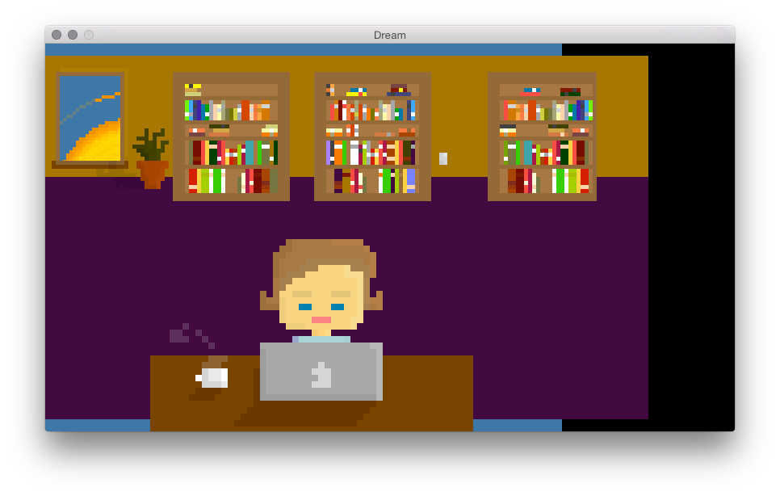

DREAM
///////////////////////////////
End of History Illusion
Point is:
Experience not repeated.
Tools change but general patterns are forever.
| Audio Prod | ➟ |
| Graphics Dev | ➟ |
| Ruby | ➟ |
Where do you get your ideas from?
Talking about music is like dancing about architecture.
-- Steve Martin
Project Start and Breakdown
# os deps from gosu wiki (mac example)
$ brew install sdl2 libogg libvorbis
$ gem install gamebox
Fetching: gamebox-0.5.5.gem (100%)
Successfully installed gamebox-0.5.5
1 gem installed
gamebox new polka_justice_league
create Gemfile
create Rakefile
create config/boot.rb
create data/graphics/GRAPHICS_GO_HERE
create data/music/MUSIC_GOES_HERE
create spec/helper.rb
create src/actors/player_actor.rb
create src/app.rb
...
polka_justice_league $ tree -L 2 -F
.
├── Gemfile
├── Gemfile.lock
├── README.md
├── Rakefile
├── config/
│ ├── boot.rb
│ ├── environment.rb
│ └── game.yml
├── data/
│ ├── fonts/
│ ├── graphics/
│ ├── music/
│ └── sounds/
├── spec/
│ └── helper.rb
└── src/
├── actors/
├── app.rb
├── behaviors/
├── stages/
└── views/
# put an image in data/graphics/starfield.png
# src/actors/starfield.rb
define_actor :starfield do
has_behaviors do
graphical scale: 5
positioned
layered
end
end
# src/stages/walk.rb
define_stage :walk do
requires :behavior_factory
curtain_up do |*args|
night_sky = create_actor :starfield, x:427, y:240, layer:0
# ...
# src/actors/bedroot_cat.rb
define_actor :bedroom_cat do
has_behaviors do
animated frame_update_time: 400, once: false
graphical scale: 5
positioned
layered
end
end
# config/environment.rb
Gamebox.configure do |config|
# ...
config.stages = [:intro, :work, :walk, :house, :bedroom_sitting, :dream]
config.game_name = "Dream"
end
tween_manager.tween_properties face, { x:face.x + 5, y:face.y },
fall_asleep_t, Tween::Quad::InOut
timer_manager.add_timer 'fall_asleep', fall_asleep_t do
timer_manager.remove_timer 'fall_asleep'
tween_manager.tween_properties face,
{x: face.x + 5, y:face.y},
fall_asleep_t, Tween::Quad::InOut
behavior_factory.add_behavior face, :fading
face.emit :fade_out, fall_asleep_t
timer_manager.add_timer 'face_fade', fall_asleep_t do
timer_manager.remove_timer 'face_fade'
asleep_face.emit :fade_out, fall_asleep_t
end
# I want to take his face ... off
timer_manager.add_timer 'face_off', fall_asleep_t * 2 do
timer_manager.remove_timer 'face_off'
asleep_face.remove
end
end
Z-ordering. Just like CSS. Parallax effect!
Don't try to draw to offscreen buffers.
640x480 -> 854x480
gamebox.io / shawn42 on github
@squarism
github.com/squarism/parallax_system
github.com/squarism/dream